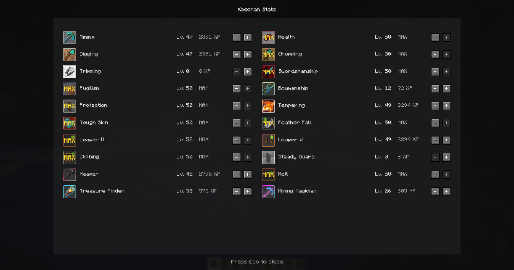

Stats
Upgrade gathering, combat, defense, movement, survival, and loot-related skills.
Interface

Core
Upgrade gathering, combat, defense, movement, survival, and loot-related skills.
Progress is stored per player and synchronized between the server and client.
Downgrade individual stats and recover part of the XP invested into progression.
Server-side tuning for progression, balance, stat behavior, and selected gameplay systems.
Heritage
Kossman Stats is based on the original GokiStats by InfinityStudio. The project preserves its progression concept while rewriting and modernizing the implementation for current Minecraft versions.